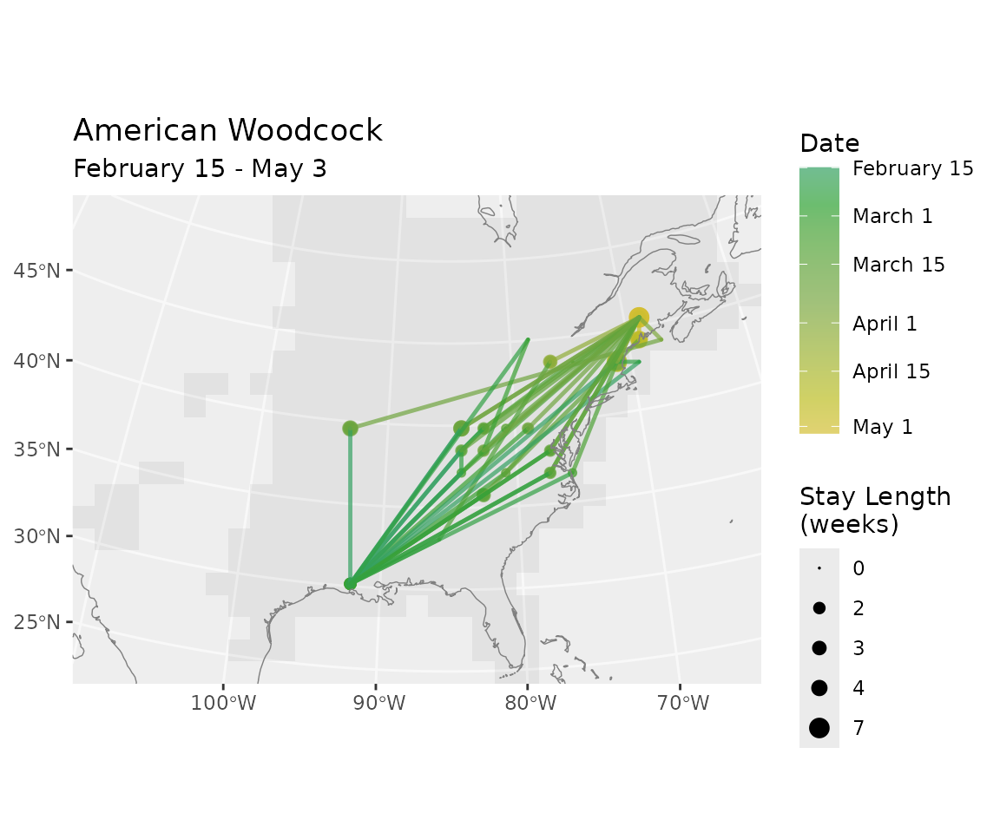
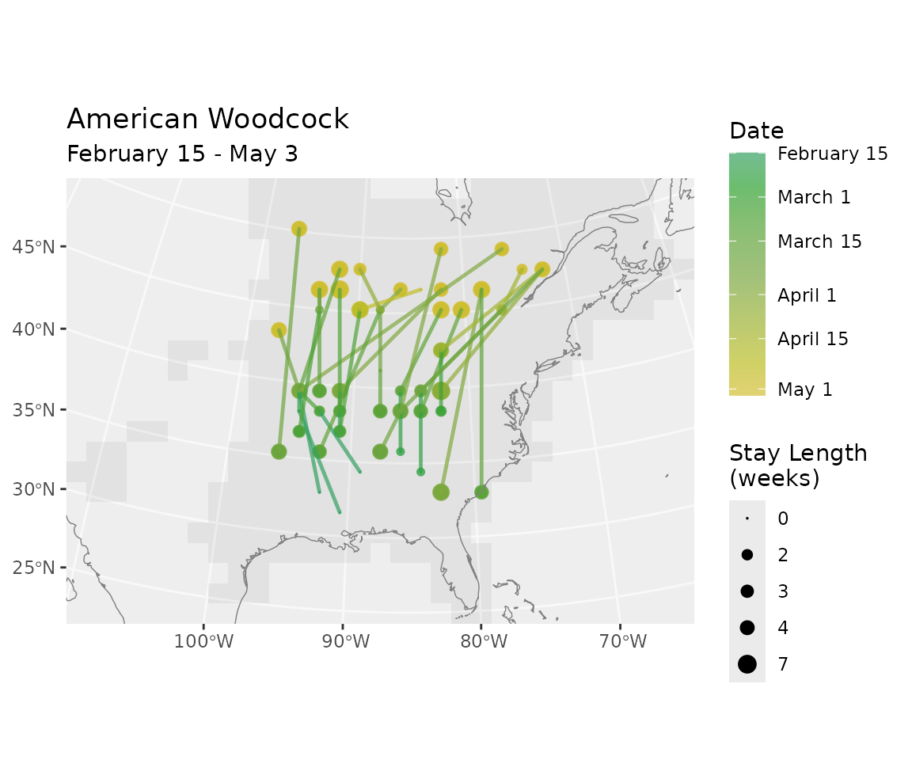
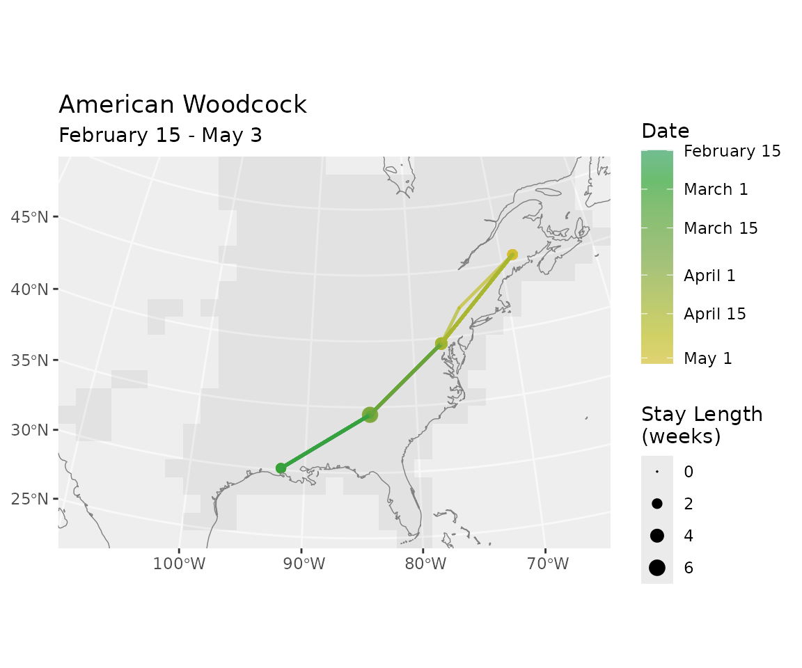
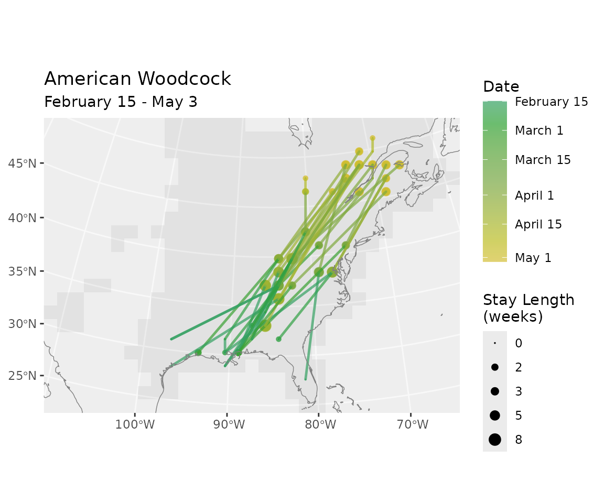
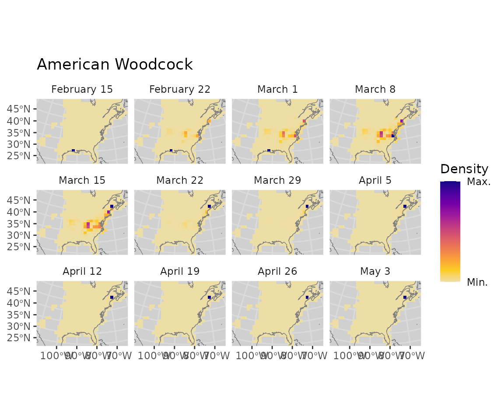
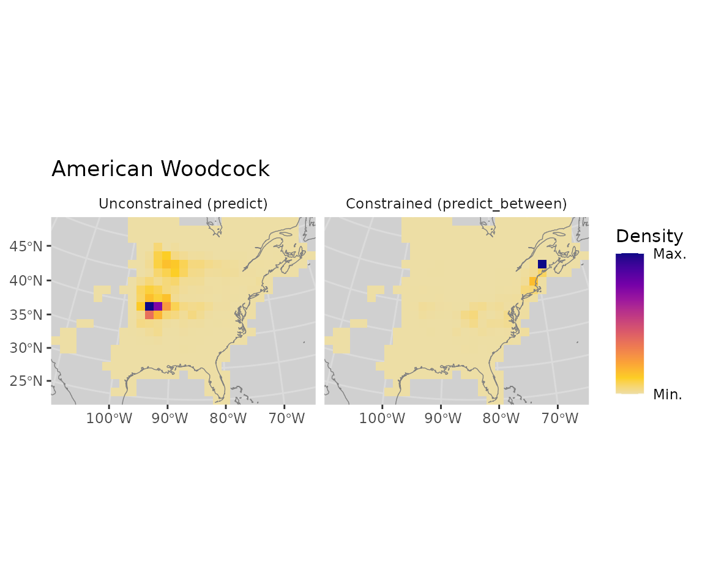
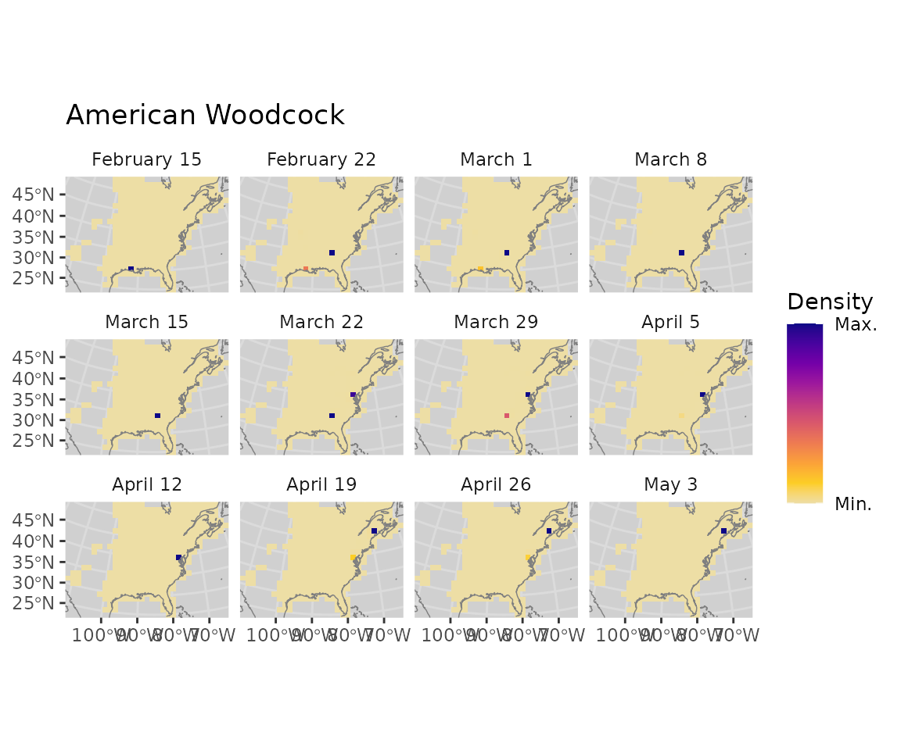
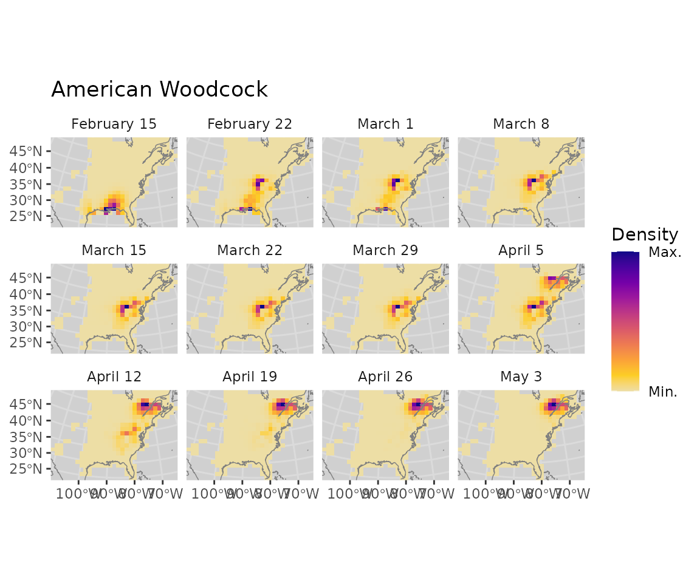

Constrained routes and distributions with route_between() and predict_between()
Source:vignettes/route_between.Rmd
route_between.Rmdroute_between() samples synthetic migration routes
conditioned on observed locations at specific times.
predict_between() computes the smooth posterior marginal
distribution at every timestep given the same observations. Both
functions use a Hidden Markov Model approach: a forward filter followed
by backward sampling (routes) or a backward filter and forward-backward
combination (distributions).
route_between()
Two hard observations
The most common use case: a bird banded at a wintering site and recaptured at a breeding site. We specify the two locations as lat/lon and convert to the model’s CRS.
# Known locations in WGS84 lat/lon
# (e.g. banding release in Louisiana, recapture in Maine)
lon <- c(-91.5, -68.5)
lat <- c(30.5, 45.5)
# Convert to model CRS
xy <- latlon_to_xy(lat = lat, lon = lon, bf)
rts <- route_between(bf, n = 20,
x_coord = xy$x,
y_coord = xy$y,
date = c("2023-02-15", "2023-05-01"))
plot_routes(rts)
Compare with unconstrained routes
Route the same time period with route() to see what
unconstrained migration looks like for this species.
rts_free <- route(bf, n = 20,
start = "2023-02-15",
end = "2023-05-01")
plot_routes(rts_free)
Several intermediate observations
Three observations along a migration path, as if from multiple resightings.
lon <- c(-91.5, -85.0, -78.0, -68.5)
lat <- c( 30.5, 35.0, 40.0, 45.5)
dates <- c("2023-02-15", "2023-03-15", "2023-04-10", "2023-05-01")
xy <- latlon_to_xy(lat = lat, lon = lon, bf)
rts_multi <- route_between(bf, n = 20,
x_coord = xy$x,
y_coord = xy$y,
date = dates)
plot_routes(rts_multi)
Soft observations (potentials)
Here we simulate three geolocator-style likelihood surfaces: broad Gaussian blobs centered on known locations, representing uncertain position estimates.
# Helper: Gaussian potential centered on a cell closest to (lon0, lat0)
make_gaussian_potential <- function(lon0, lat0, sigma_km, bf) {
xy0 <- latlon_to_xy(lat = lat0, lon = lon0, bf)
all_xy <- i_to_xy(seq_len(n_active(bf)), bf)
dist_m <- sqrt((all_xy$x - xy0$x)^2 + (all_xy$y - xy0$y)^2)
phi <- exp(-0.5 * (dist_m / (sigma_km * 1000))^2)
phi
}
# Three rough position estimates (sigma = 300 km)
lons <- c(-91.5, -82.0, -68.5)
lats <- c( 30.5, 38.0, 45.5)
dates <- c("2023-02-15", "2023-04-01", "2023-05-01")
sigma <- 300
obs_matrix <- sapply(seq_along(lons), function(k) {
make_gaussian_potential(lons[k], lats[k], sigma, bf)
})
colnames(obs_matrix) <- paste0("t", lookup_timestep(dates, bf))
rts_soft <- route_between(bf, n = 20, potentials = obs_matrix)
plot_routes(rts_soft)
predict_between()
predict_between() returns the marginal probability
distribution at every timestep conditioned on the observations — the
smooth posterior over location, rather than sampled routes.
Two hard observations
The same two endpoints as above, but instead of routes we get a probability surface at each timestep.
xy <- latlon_to_xy(lat = c(30.5, 45.5), lon = c(-91.5, -68.5), bf)
distr <- predict_between(bf,
x_coord = xy$x,
y_coord = xy$y,
date = c("2023-02-15", "2023-05-01"))
cat("Dimensions:", dim(distr), "\n")
#> Dimensions: 342 12
cat("Log-likelihood of observations:", round(attr(distr, "log_z"), 2), "\n")
#> Log-likelihood of observations: -7.36
plot_distr(distr, bf, dynamic_scale = TRUE)
Compare: unconstrained vs constrained marginals
predict() gives the unconstrained forward distribution
from the start location. predict_between() additionally
pulls the distribution back toward the known end location.
distr_start <- distr[, 1] # one-hot at the start cell
distr_free <- predict(bf, distr_start,
start = "2023-02-15", end = "2023-05-01")
# Show the middle timestep from each
mid <- ncol(distr) %/% 2
both <- cbind(distr_free[, mid], distr[, mid])
colnames(both) <- c("Unconstrained (predict)", "Constrained (predict_between)")
plot_distr(both, bf, dynamic_scale = TRUE)
Several intermediate observations
With multiple pinned locations, the marginals are squeezed toward each observation at the relevant timestep.
lon <- c(-91.5, -85.0, -78.0, -68.5)
lat <- c( 30.5, 35.0, 40.0, 45.5)
dates <- c("2023-02-15", "2023-03-15", "2023-04-10", "2023-05-01")
xy <- latlon_to_xy(lat = lat, lon = lon, bf)
distr_multi <- predict_between(bf,
x_coord = xy$x,
y_coord = xy$y,
date = dates)
plot_distr(distr_multi, bf, dynamic_scale = TRUE)
Soft observations (potentials)
The same Gaussian likelihood surfaces from the
route_between() soft-obs example above, but now showing the
smoothed posterior distributions rather than sampled routes.
distr_soft <- predict_between(bf, potentials = obs_matrix)
plot_distr(distr_soft, bf, dynamic_scale = TRUE)